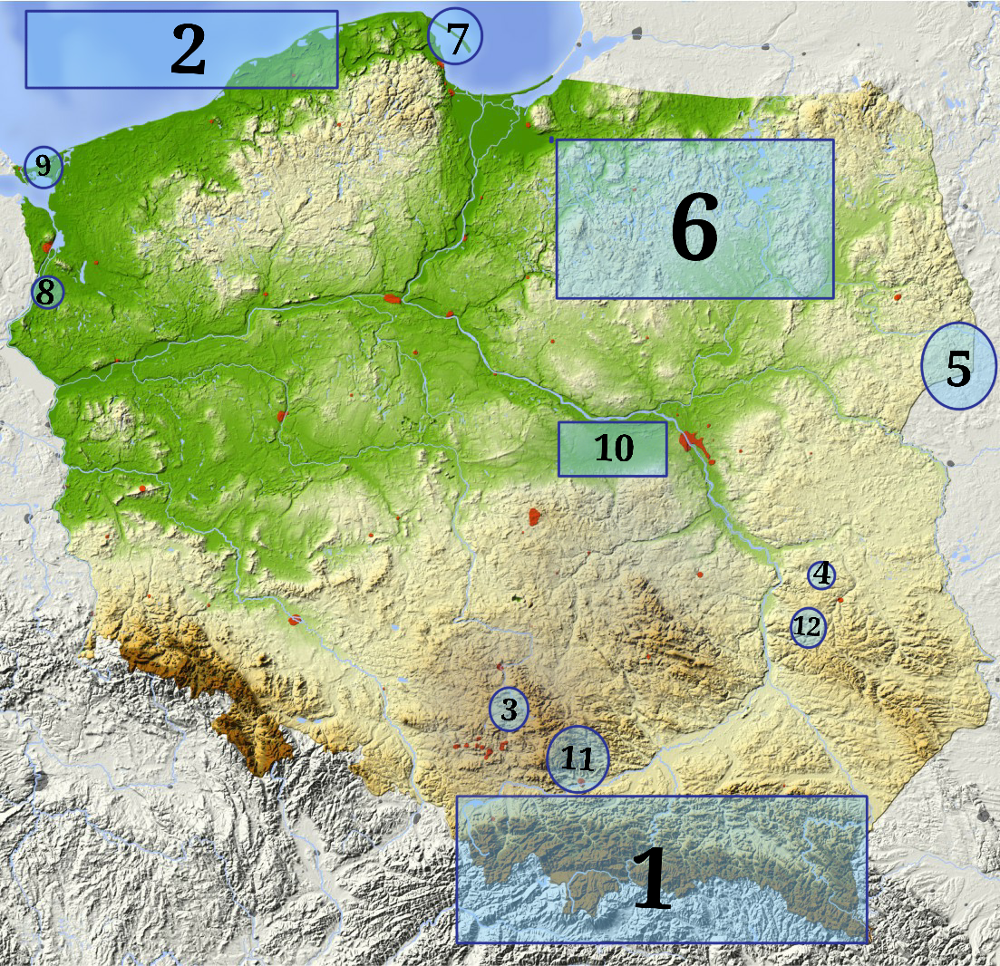

🏠
Discover the beauty and variety of Polish nature
Poland is really divers with mountains, laskes and sea. Traveling around Poland you can see a lot of different terrains, flora and fauna. You will be amazed by the number of unique places Poland has to offer. Some of which might totally suprise you!
Press on highlited areas to learn more about the beautiful spot worth visiting!

- Tatra Mountains
- Baltic Sea
- Błędów Desert
- Korzeniowy Dół
- Białowieża Forest
- Masuria
- Hel Penisula
- Curved Forest
- Turquise Lake
- Kampinowski Forest
- Ojcowski National Park
- Nałęczów